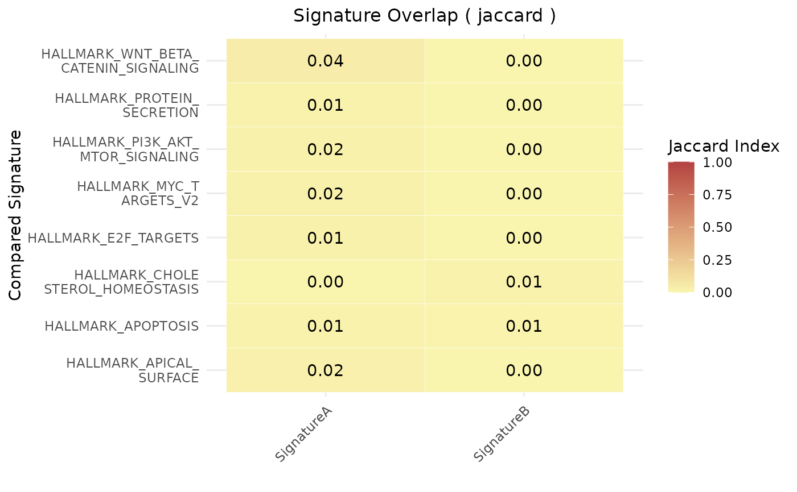
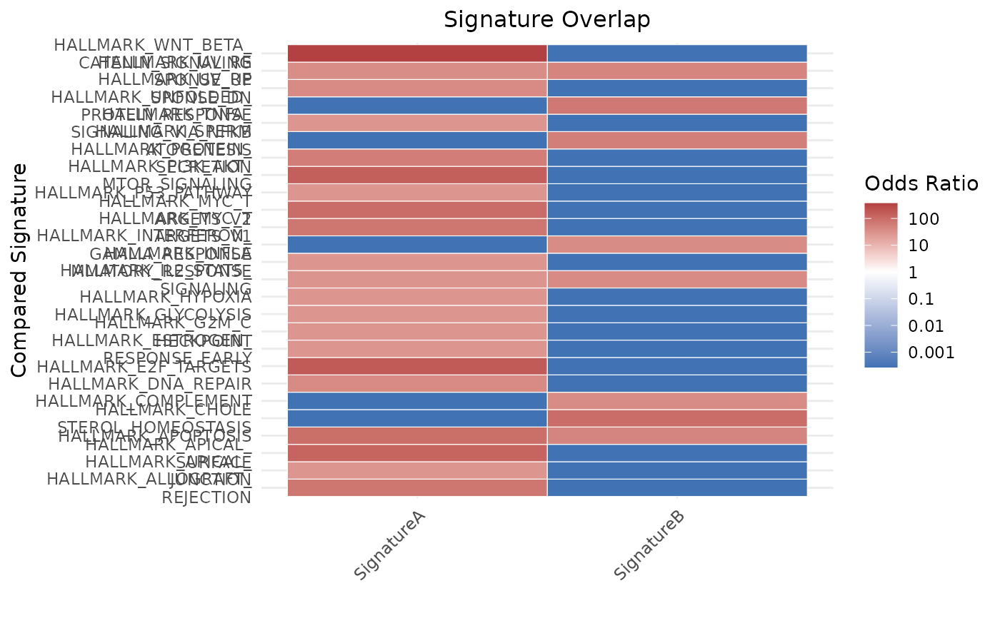

Plot Signature Similarity via Jaccard Index or Fisher's Odds Ratio
Source:R/geneset_similarity.R
geneset_similarity.RdVisualizes similarity between user-defined gene signatures and either other user-defined signatures or MSigDB gene sets, using either the Jaccard index or Fisher's Odds Ratio. Produces a heatmap of pairwise similarity metrics.
Usage
geneset_similarity(
signatures,
other_user_signatures = NULL,
collection = NULL,
subcollection = NULL,
metric = c("jaccard", "odds_ratio"),
universe = NULL,
or_threshold = 1,
pval_threshold = 0.05,
limits = NULL,
title_size = 12,
color_values = c("#F9F4AE", "#B44141"),
title = NULL,
jaccard_threshold = 0,
msig_subset = NULL,
width_text = 20,
na_color = "grey90"
)Arguments
- signatures
A named list of character vectors representing reference gene signatures.
- other_user_signatures
Optional. A named list of character vectors representing other user-defined signatures to compare against.
- collection
Optional. MSigDB collection name (e.g.,
"H"for hallmark,"C2"for curated gene sets). Use msigdbr::msigdbr_collections() for the available options.- subcollection
Optional. Subcategory within an MSigDB collection (e.g.,
"CP:REACTOME"). Use msigdbr::msigdbr_collections() for the available options.- metric
Character. Either "jaccard" or "odds_ratio".
- universe
Character vector. Background gene universe. Required for odds ratio.
- or_threshold
(only if method == "odds_ratio" only) Numeric. Minimum Odds Ratio required for a gene set to be included in the plot. Default is 1.
- pval_threshold
(only if method == "odds_ratio" only) Numeric. Maximum adjusted p-value to show a label. Default is 0.05.
- limits
Numeric vector of length 2. Limits for color scale.
- title_size
Integer specifying the font size for the plot title. Default is
12.- color_values
Character vector of colors used for the fill gradient. Default is
c("#F9F4AE", "#B44141").- title
Optional. Custom title for the plot. If
NULL, the title defaults to"Signature Overlap".- jaccard_threshold
(only if method == "jaccard" only) Numeric. Minimum Jaccard index required for a gene set to be included in the plot. Default is
0.- msig_subset
Optional. Character vector of MSigDB gene set names to subset from the specified collection. Useful to restrict analysis to a specific set of pathways. If supplied, other filters will apply only to this subset. Use "collection = "all" to mix gene sets from different collections.
- width_text
Integer. Character wrap width for labels.
- na_color
Character. Color for NA values in the heatmap. Default is
"grey90".
Value
Invisibly returns a list containing:
plotThe ggplot2 object of the similarity heatmap.
dataThe data frame object containing the similarity scores aper pair of gene sets.
Examples
# Create two simple gene signatures
sig1 <- c("TP53", "BRCA1", "MYC", "EGFR", "CDK2")
sig2 <- c("ATXN2", "FUS", "MTOR", "CASP3")
signatures <- list(SignatureA = sig1, SignatureB = sig2)
# Compare the signatures using the Jaccard index
plt <- geneset_similarity(
signatures = signatures,
metric = "jaccard",
collection = "H",
jaccard_threshold = 0.01
)
# Print the plot (will show a small heatmap)
print(plt)
#> $plot

#>
#> $data
#> Reference_Signature Compared_Signature Score Label
#> 6 SignatureA HALLMARK_APICAL_SURFACE 0.020833333 0.02
#> 7 SignatureA HALLMARK_APOPTOSIS 0.012195122 0.01
#> 9 SignatureA HALLMARK_CHOLESTEROL_HOMEOSTASIS 0.000000000 0.00
#> 13 SignatureA HALLMARK_E2F_TARGETS 0.014851485 0.01
#> 33 SignatureA HALLMARK_MYC_TARGETS_V2 0.016129032 0.02
#> 40 SignatureA HALLMARK_PI3K_AKT_MTOR_SIGNALING 0.018518519 0.02
#> 41 SignatureA HALLMARK_PROTEIN_SECRETION 0.010000000 0.01
#> 49 SignatureA HALLMARK_WNT_BETA_CATENIN_SIGNALING 0.044444444 0.04
#> 56 SignatureB HALLMARK_APICAL_SURFACE 0.000000000 0.00
#> 57 SignatureB HALLMARK_APOPTOSIS 0.006097561 0.01
#> 59 SignatureB HALLMARK_CHOLESTEROL_HOMEOSTASIS 0.012987013 0.01
#> 63 SignatureB HALLMARK_E2F_TARGETS 0.000000000 0.00
#> 83 SignatureB HALLMARK_MYC_TARGETS_V2 0.000000000 0.00
#> 90 SignatureB HALLMARK_PI3K_AKT_MTOR_SIGNALING 0.000000000 0.00
#> 91 SignatureB HALLMARK_PROTEIN_SECRETION 0.000000000 0.00
#> 99 SignatureB HALLMARK_WNT_BETA_CATENIN_SIGNALING 0.000000000 0.00
#> Pval
#> 6 NA
#> 7 NA
#> 9 NA
#> 13 NA
#> 33 NA
#> 40 NA
#> 41 NA
#> 49 NA
#> 56 NA
#> 57 NA
#> 59 NA
#> 63 NA
#> 83 NA
#> 90 NA
#> 91 NA
#> 99 NA
#>
# Odds ratio example (requires universe)
gene_universe <- unique(c(
sig1, sig2,
msigdbr::msigdbr(species = "Homo sapiens", category = "C2")$gene_symbol
))
#> Warning: The `category` argument of `msigdbr()` is deprecated as of msigdbr 10.0.0.
#> ℹ Please use the `collection` argument instead.
plt_or <- geneset_similarity(
signatures = signatures,
metric = "odds_ratio",
universe = gene_universe,
collection = "H"
)
print(plt_or)
#> $plot

#>
#> $data
#> Reference_Signature Compared_Signature Score
#> odds ratio1 SignatureA HALLMARK_ALLOGRAFT_REJECTION 1.872334
#> odds ratio4 SignatureA HALLMARK_APICAL_JUNCTION 1.444325
#> odds ratio5 SignatureA HALLMARK_APICAL_SURFACE 2.111516
#> odds ratio6 SignatureA HALLMARK_APOPTOSIS 1.968824
#> odds ratio8 SignatureA HALLMARK_CHOLESTEROL_HOMEOSTASIS -Inf
#> odds ratio10 SignatureA HALLMARK_COMPLEMENT -Inf
#> odds ratio11 SignatureA HALLMARK_DNA_REPAIR 1.571111
#> odds ratio12 SignatureA HALLMARK_E2F_TARGETS 2.226011
#> odds ratio14 SignatureA HALLMARK_ESTROGEN_RESPONSE_EARLY 1.444325
#> odds ratio17 SignatureA HALLMARK_G2M_CHECKPOINT 1.444325
#> odds ratio18 SignatureA HALLMARK_GLYCOLYSIS 1.444325
#> odds ratio21 SignatureA HALLMARK_HYPOXIA 1.444325
#> odds ratio22 SignatureA HALLMARK_IL2_STAT5_SIGNALING 1.446527
#> odds ratio24 SignatureA HALLMARK_INFLAMMATORY_RESPONSE 1.444325
#> odds ratio26 SignatureA HALLMARK_INTERFERON_GAMMA_RESPONSE -Inf
#> odds ratio31 SignatureA HALLMARK_MYC_TARGETS_V1 1.872334
#> odds ratio32 SignatureA HALLMARK_MYC_TARGETS_V2 1.989696
#> odds ratio36 SignatureA HALLMARK_P53_PATHWAY 1.444325
#> odds ratio39 SignatureA HALLMARK_PI3K_AKT_MTOR_SIGNALING 2.158469
#> odds ratio40 SignatureA HALLMARK_PROTEIN_SECRETION 1.767411
#> odds ratio42 SignatureA HALLMARK_SPERMATOGENESIS -Inf
#> odds ratio44 SignatureA HALLMARK_TNFA_SIGNALING_VIA_NFKB 1.444325
#> odds ratio45 SignatureA HALLMARK_UNFOLDED_PROTEIN_RESPONSE -Inf
#> odds ratio46 SignatureA HALLMARK_UV_RESPONSE_DN 1.588870
#> odds ratio47 SignatureA HALLMARK_UV_RESPONSE_UP 1.548242
#> odds ratio48 SignatureA HALLMARK_WNT_BETA_CATENIN_SIGNALING 2.564626
#> odds ratio51 SignatureB HALLMARK_ALLOGRAFT_REJECTION -Inf
#> odds ratio54 SignatureB HALLMARK_APICAL_JUNCTION -Inf
#> odds ratio55 SignatureB HALLMARK_APICAL_SURFACE -Inf
#> odds ratio56 SignatureB HALLMARK_APOPTOSIS 1.664703
#> odds ratio58 SignatureB HALLMARK_CHOLESTEROL_HOMEOSTASIS 2.005430
#> odds ratio60 SignatureB HALLMARK_COMPLEMENT 1.569432
#> odds ratio61 SignatureB HALLMARK_DNA_REPAIR -Inf
#> odds ratio62 SignatureB HALLMARK_E2F_TARGETS -Inf
#> odds ratio64 SignatureB HALLMARK_ESTROGEN_RESPONSE_EARLY -Inf
#> odds ratio67 SignatureB HALLMARK_G2M_CHECKPOINT -Inf
#> odds ratio68 SignatureB HALLMARK_GLYCOLYSIS -Inf
#> odds ratio71 SignatureB HALLMARK_HYPOXIA -Inf
#> odds ratio72 SignatureB HALLMARK_IL2_STAT5_SIGNALING 1.571635
#> odds ratio74 SignatureB HALLMARK_INFLAMMATORY_RESPONSE -Inf
#> odds ratio76 SignatureB HALLMARK_INTERFERON_GAMMA_RESPONSE 1.569432
#> odds ratio81 SignatureB HALLMARK_MYC_TARGETS_V1 -Inf
#> odds ratio82 SignatureB HALLMARK_MYC_TARGETS_V2 -Inf
#> odds ratio86 SignatureB HALLMARK_P53_PATHWAY -Inf
#> odds ratio89 SignatureB HALLMARK_PI3K_AKT_MTOR_SIGNALING -Inf
#> odds ratio90 SignatureB HALLMARK_PROTEIN_SECRETION -Inf
#> odds ratio92 SignatureB HALLMARK_SPERMATOGENESIS 1.741937
#> odds ratio94 SignatureB HALLMARK_TNFA_SIGNALING_VIA_NFKB -Inf
#> odds ratio95 SignatureB HALLMARK_UNFOLDED_PROTEIN_RESPONSE 1.820410
#> odds ratio96 SignatureB HALLMARK_UV_RESPONSE_DN -Inf
#> odds ratio97 SignatureB HALLMARK_UV_RESPONSE_UP 1.672889
#> odds ratio98 SignatureB HALLMARK_WNT_BETA_CATENIN_SIGNALING -Inf
#> Label Pval
#> odds ratio1 1.9 7.806230e-04
#> odds ratio4 1.4 4.389316e-02
#> odds ratio5 2.1 9.792064e-03
#> odds ratio6 2.0 5.070186e-04
#> odds ratio8 1.000000e+00
#> odds ratio10 1.000000e+00
#> odds ratio11 1.6 3.306730e-02
#> odds ratio12 2.2 6.937697e-06
#> odds ratio14 1.4 4.389316e-02
#> odds ratio17 1.4 4.389316e-02
#> odds ratio18 1.4 4.389316e-02
#> odds ratio21 1.4 4.389316e-02
#> odds ratio22 1.4 4.367760e-02
#> odds ratio24 1.4 4.389316e-02
#> odds ratio26 1.000000e+00
#> odds ratio31 1.9 7.806230e-04
#> odds ratio32 2.0 1.289158e-02
#> odds ratio36 1.4 4.389316e-02
#> odds ratio39 2.2 2.160134e-04
#> odds ratio40 1.8 2.126545e-02
#> odds ratio42 1.000000e+00
#> odds ratio44 1.4 4.389316e-02
#> odds ratio45 1.000000e+00
#> odds ratio46 1.6 3.176163e-02
#> odds ratio47 1.5 3.480600e-02
#> odds ratio48 2.6 3.425629e-05
#> odds ratio51 1.000000e+00
#> odds ratio54 1.000000e+00
#> odds ratio55 1.000000e+00
#> odds ratio56 1.7 2.846729e-02
#> odds ratio58 2.0 1.316093e-02
#> odds ratio60 1.6 3.527066e-02
#> odds ratio61 1.000000e+00
#> odds ratio62 1.000000e+00
#> odds ratio64 1.000000e+00
#> odds ratio67 1.000000e+00
#> odds ratio68 1.000000e+00
#> odds ratio71 1.000000e+00
#> odds ratio72 1.6 3.509666e-02
#> odds ratio74 1.000000e+00
#> odds ratio76 1.6 3.527066e-02
#> odds ratio81 1.000000e+00
#> odds ratio82 1.000000e+00
#> odds ratio86 1.000000e+00
#> odds ratio89 1.000000e+00
#> odds ratio90 1.000000e+00
#> odds ratio92 1.7 2.391177e-02
#> odds ratio94 1.000000e+00
#> odds ratio95 1.8 2.004460e-02
#> odds ratio96 1.000000e+00
#> odds ratio97 1.7 2.794247e-02
#> odds ratio98 1.000000e+00
#>